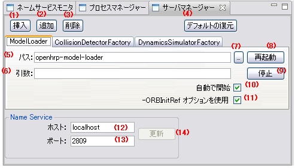

Server Manager View
Here we explain various elements that compose Server Manager View. Windows settings are taken for
following example.

Insert button
Click to insert Server top of the selected tab. Enter a unique ID(that becomes tab name),
when the "ID enter" dialog box is displayed.
Add button
Click to add Server behind the selected tab. Enter a unique ID(that becomes tab name),
when the "ID enter" dialog box is displayed.
Remove button
Click to remove the selected tab.
- Restore deffault button
If it clicks, change is canceled and it returns to an initial state.
Path
Specify the start-up command of the Server.
Args
Specify the parameters to be used at Server start-up.
Reference button
Opens a dialog box that allows you to select the Server's start-up command.
- Restart button
Click to restart Server.
Start/Stop button
Let you to start/stop Server. Button changes with the Server status.
Automatic start
If this option is checked, Server automatically starts with the GraUI start.
Use -ORBInitRef option
If this option is checked, following parameters are also added besides those specified in Args
-ORBInitRef NameService=corbaloc:iiop:(NameService HostName):(NameService PortNumber)/NameService
- host name
The host name of Name Server is displayed.
An update button becomes effective by changing the value.
Please input the host name based on RFC1035.
- Port number
The port number of Name Server is displayed.
An update button becomes effective by changing the value.
Please input the values from 0 to 65535.
- Update button
The host name and port number of a Name Server are reflected at the time of next starting of Eclipse.
When the form of each value is not appropriate, since an error dialog is displayed, please input by referring to a message.
-
Environment variables can be used by specifying as $(EnvironmentVariableName) in "Path" and
"Args".
-
Before you delete a Server using Remove button or make changes to an existing Server, beware to
stop the Server using Stop button. Unless the Server will be existed and enabled when GrxUI is
restarted.
- When GrxUI starts, Servers are started in the sequential order of the tab from left end.